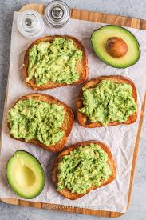

Avocado Toast

No-Cook Avocado Toast
Easy, healthy avocado toast recipe. A quick no-cook breakfast or snack with mashed avocado on toasted bread, seasoned to perfection.
Ingredients
- 1 slice of bread
- 1/2 ripe avocado
- Salt and pepper to taste
- red pepper flakes, everything bagel seasoning, or a squeeze of lemon juice
Steps
- Toast your slice of bread to your liking.
- While the bread toasts, slice the avocado in half, remove the pit, and scoop the flesh into a bowl.
- Mash the avocado with a fork to your preferred consistency (chunky or smooth).
- Spread the mashed avocado evenly onto the warm toast.
- Season generously with salt, pepper, and any other toppings you like.